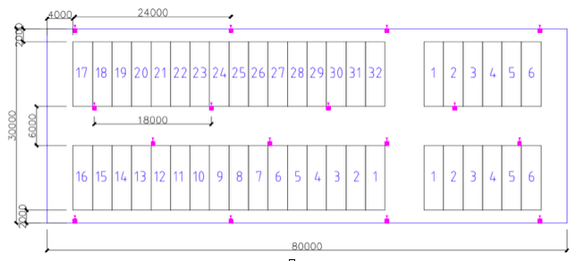

Documents
Table of Contents
1 collections
ps1: 长度单位如果未给出，统一使用米
ps2: 数据冗余储存，不要见怪
ps3: 每个仓库布局与位置数都是一样的
ps4: ObjectId 为 mongodb 特有的 _id 字段的类型
ps5: 物资大小为 1*2*1 (长宽高)， 每个区域放两排，每排最高3米
1.1 repositories
| key | key in Chinese | type | default | description |
|---|---|---|---|---|
| id | 仓库编号 | Number | unique, required | >=1的整数, （id号仓库） |
| available_space | 空闲空间数量 | Number | 2640 | 所有未满的location的剩余体积之和 (2*3*10*44 立方米) |
| locations | 各位置信息 | Array<Object> | [] | 数组中对象格式见下方, default是44个locations |
| stored_count | 已存放物资数 | Number | 0 |
1.1.1 locations Object

| key | key in Chinese | type | default | description |
|---|---|---|---|---|
| id | 位置id | Number | unique, required | >=1, 该值用于定位,顺时针算, “17” id为1 |
| place | 块号 | Number | required | >=1 该值仅用于显示，根据文档图，分四个大块，该值表示第几块（顺时针算） |
| label | 位置标记 | String | required | 该值仅用于显示，显示location时其上的标记 |
| available_space | 剩余空间 | Number | 60 | >=0, 该位置剩余的空间。(2*3*10 立方米) |
| materials_num | 物资在各层的数量 | Array<Number> | [0, 0, 0] |
1.2 materials
| key | key in Chinese | type | default | description |
|---|---|---|---|---|
| id | 物资编号 | Number | now | >=1, utc时间数字 |
| type | 物资类型 | String | required | length>=1, 哪些类型未定 |
| description | 物资描述 | String | "" | |
| import_time | 入库时间 | Date | now | |
| estimated_export_time | 估计出库时间 | Date | 用于自动搬移将出库的物资到门口 | |
| height | 物资高度 | Number | 1 | |
| length | 物资长度 | Number | 1 | |
| width | 物资宽度 | Number | 1 | |
| repository_id | 储存仓库 | Number | required | 所在仓库的id, -1值意味着出库; 搬运到新地方，修改的是这两个字段 |
| location_id | 仓库中位置 | Number | requried | |
| layer | 位置中的层 | Number | requried | 0表示最下层 |
| status | 物资状态 | Number | 300 | 状态码，详细见下方 |
| last_migration | 最近一次搬运记录 | ObjectId | 最近一次migration的_id | |
| location_update_time | 位置更新时间 | Date | now | 这个是系统中位置更新时间，实际更新时间应当直接记录在migrations中 |
1.2.1 status
- 1 开头为位置正确
- 100 ：物资处于正确位置中
- 101 : 物资已出库
- 2 开头为处于搬运中
- 200 ：物资信息录入完毕，正在搬运入库
- 201 ：物资从原位置搬运到一个新的位置
- 202 ：物资正在搬运出库
- 3 开头为位置不正确
- 300 ：物资信息录入完毕，未入库
- 301 : 物资位置在系统中已变换，但是未搬运到新的位置
- 302 ：物资在系统中已申请出库，但是未搬运出库
- 303 ：物资位置错误
- 4 开头为物资缺失
- 400 : 物资找不到（一般为rfid损坏）
1.3 migrations
| key | key in Chinese | type | default | description |
|---|---|---|---|---|
| material | 物资 | ObjectId | required | |
| date | 移动完成时间 | Date | 未完成为空值 | |
| from_repository | 原仓库 | Number | required | 仓库id, 0表示入库 |
| from_location | 原位置 | Number | required | 原位置的id |
| from_layer | 原层 | Number | required | |
| to_repository | 目标仓库 | Number | required | 仓库id, -1表示出库 |
| to_location | 目标位置 | Number | required | 目标位置的id |
| to_layer | 目标层 | Number | required |
1.4 errorinfos
| key | key in Chinese | type | default | description |
|---|---|---|---|---|
| fixed | 修复完成 | Boolean | false | 是否修复完成 |
| error_code | 错误码 | Number | 1 | 1位置错误2无法识别 |
| create_date | 错误创建时间 | Date | now | |
| repository | 仓库id | Number | required | |
| location | 位置id | Number | required | |
| layer | 层 | Number | required | |
| material | 物资id | Number | 如果错误码为2，则为空值 | |
| image | 照相图片路径 | String | required | 错误照片，圈出错误 |
1.5 tasks
| key | key in Chinese | type | default | description |
|---|---|---|---|---|
| action | 动作 | Number | 500 | 动作码详细见下方 |
| staff | 接受任务的员工 | ObjectId | ||
| status | 任务状态 | Number | 0 | 0未开始1进行中2完成3任务取消 |
| migration | 移动信息 | ObjectId | 当action为6开头时，该值为空 | |
| error | 错误信息 | ObjectId | 当action为5开头时，该值为空 | |
| publish_time | 任务发布时间 | Date | now | |
| start_time | 任务开始时间 | Date | 当接受任务时，就已经开始了 | |
| end_time | 任务结束时间 | Date | ||
| remark | 任务附加评语 | String |
1.5.1 action
- 5 开头为移动
- 500 ：移动入库
- 501 ：从原位置移动到新位置
- 502 ：移动出库
- 6 开头为异常处理 (error_code + 600)
- 601 ：校正物资错误位置
- 602 ：条形码损坏而造成系统无法识别的问题
1.6 exportinfos
| key | key in Chinese | type | default | description |
|---|---|---|---|---|
| actual_export_time | 实际出库时间 | Date | 记录出库信息 | |
| material | 物资 | ObjectId | required | |
| destination | 去向 | String | "" | |
| from_repository | 原仓库id | Number | required |
1.7 staffs
| key | key in Chinese | type | default | description |
|---|---|---|---|---|
| name | 职员名 | String | "无名" | |
| account | 职员账户 | String | required | length >= 6, 用于登录 |
| passwd | 密码 | String | required | length >= 6 |
| sex | 性别 | Number | 1 | 0女1男 |
| age | 年龄 | Number | 1 | >1 |
| permission | 职员权限 | Number | 1 | 0管理员1员工99root |
| signup_time | 注册时间 | Date | now | |
| last_login_time | 最近登录时间 | Date |
2 schedule types
| type(Number), -1 表示未设置 | time (Date) | other params(Number) default 0 |
|---|---|---|
| 每天(0) | 几时 | |
| 每周(1) | 几时 | 周几 |
| 每月(2) | 几时 | 几号 |
| 每隔(3) | 几时(什么时间开始第一次) | 时间间隔(单位: 秒) |